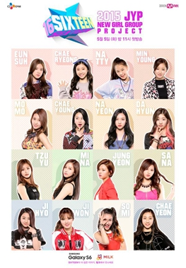

《SIXTEEN》是JYP娛樂公司在2015年與Mnet(韓一知名電視台)合作開播的新女子音樂團體選拔及生存實境節目，以七名預備成員及九名練習生作為主角，進行各種唱歌、舞蹈等嚴格訓練並競爭，最後獲選的成員會成為JYP娛樂新女團「TWICE」的成員出道。
將16名練習生分為「Major」及「Minor」兩隊，Major組為預訂出道預備生7名；Minor組則為練習生9名。
根據每次的任務，若Major組成員表現不佳將下降到Minor組；
反之，Minor組成員表現好的就能上升至Major組，每個任務後會從Minor組中選出一名在節目中下車。
最終留在Major組的能以「TWICE」成員身份出道，而落選的練習生則有望於2017年出道。
後因TWICE出道後獲得巨大的成功及擁有穩定的人氣基礎，JYP娛樂因而於2017年首季宣布近年內不再推出新女團。
一到十集參賽者的成績組別變動表